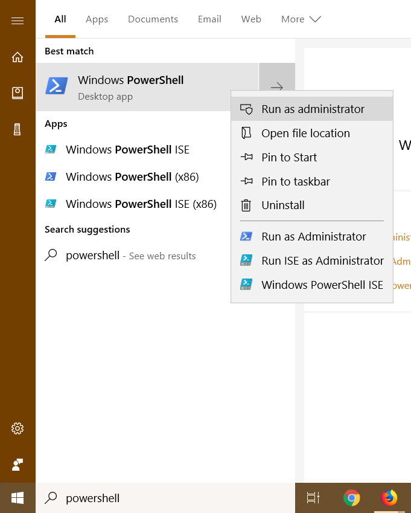
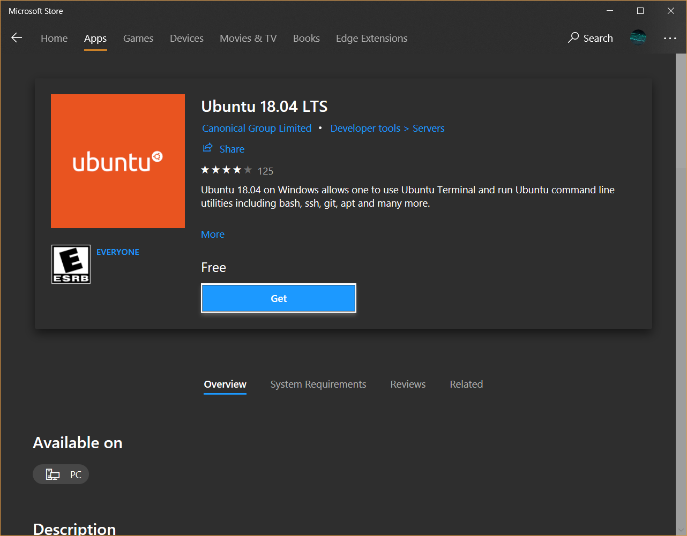
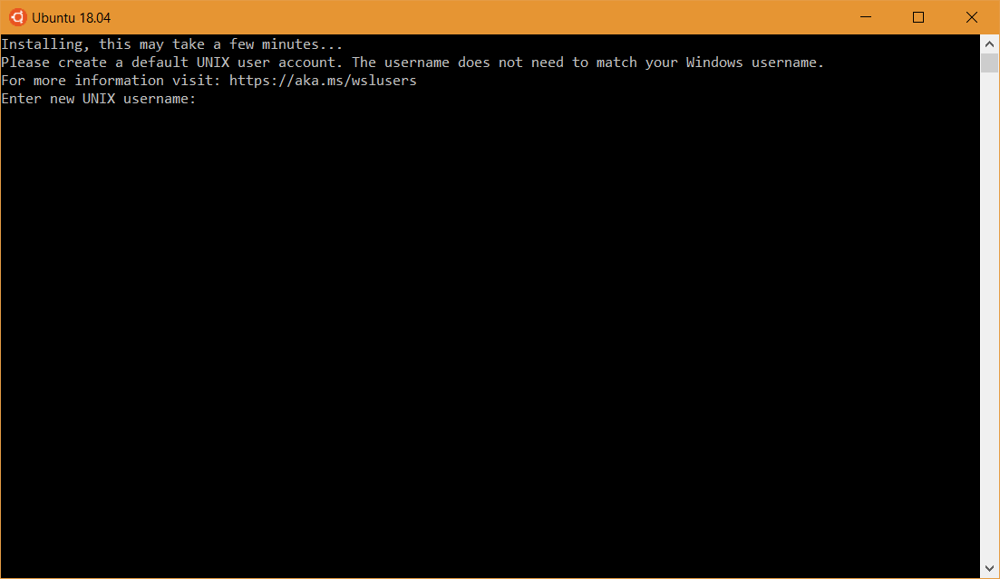
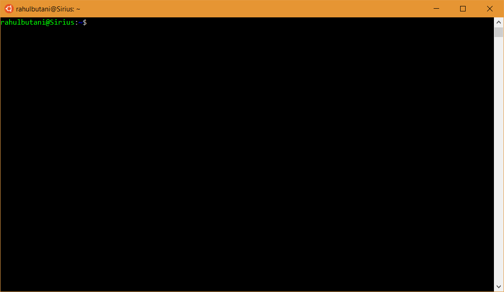
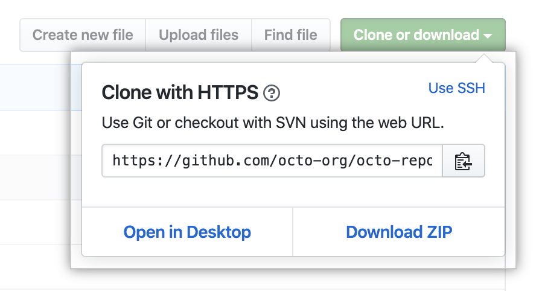

Foreword
Welcome to the always up-to-date UAV Austin installation guide.

The goal of this guide is to eventually be a compendium of the installation processes for all the tools and services used by the UAV Austin Software team. As of now, it has information about:
- Configuring your OS
- Getting set up with Git and GitHub
- Installing Rust
- Configuring your editor for Rust
- Installing Docker
As of now, we're supporting:
- Windows 10 Version 1803 (Build 17134) or newer (any edition is fine)
- macOS 10.10 Yosemite or newer
- Ubuntu 16.04.5 or newer If you're running something else, you're on your own.
If you're not sure what to do, start by configuring your OS.
This guide is currently a best-effort endeavor; it's possible and even likely that information in this guide will be outdated by the time you read it. Unfortunately, there isn't very much we can do about this. Installation involves many cross-cutting elements of the typical software stack and moves too quickly for us to reasonably always be up to date; it simply isn't very practical.
This means that it's probable that you'll have to poke around a bit and do some trial and error to get set up. We're sorry about this. If you do run into issues please let us know and we'll help you out. Or better yet, if you're willing to, file an issue or send us a PR.
Getting Started
First things first, we've got to get your OS sorted. Here at UAV Austin we're good with Windows, macOS, and Linux.
Head to the page for your OS for instructions.


Windows
If you're running Windows the first thing we need to do is make sure you're on a version that will work with the rest of our software. Any updated edition of Windows 10 will do; specifically, Version 1803 / Build 17134 (the April 2018 update) or newer.
Check your Windows Version
Here's how you can check which version you're on. Press the Start Key + R to bring up the run command box; then type in winver and hit enter.

You should see something like this:

So long as your Windows Version is 1803 or greater, you're good to go. If it isn't check Windows Update; you probably have some updates you need to install.
Linux + Windows -> WSL
Next, we can install the Windows Subsystem for Linux (WSL). This essentially allows you to have a UNIX-y development environment without all of the fuss of dual-booting and virtualization. It's not exactly like running Linux natively but it's pretty darn close (sidenote: there's some very impressive engineering that goes into WSL, in case you're curious).
N.B.: In case these instructions don't work when you're reading this, they were sourced from here.
Enable the Subsystem
First, we have to enable WSL. To do this, open PowerShell as Administrator:

And then, run:
> Enable-WindowsOptionalFeature -Online -FeatureName Microsoft-Windows-Subsystem-Linux

You may be asked to restart your computer. If you are, please do so.
Installing a Linux Distribution:
Once we've enabled WSL, we can install a Linux distribution straight from the Windows Store! You have a fair number of options, but unless you know what you're doing, we recommend sticking with Ubuntu 18.04.

Once it finishes installing, launch Ubuntu from the Start Menu and let it finish installing. If everything goes well, you should see something like this:

Pick any username and password that you can remember.
Finally, you should arrive at a prompt that looks something like this:

If so, WSL is up and running. Just to be sure, try running:
$ curl parrot.live
Installing some essentials
Now that you've got WSL set up, it's time to start installing things inside the subsystem. Ubuntu (and several other distributions) use apt, a package manager, to install and manage software packages.
To start, let's tell apt to update the packages it knows about:
N.B.: The
$indicates that you should run a command in your terminal (Ubuntu's Bash in this case). I.e. copy and paste everything after the$into your terminal and hit enter. Right-click is paste. Astute readers will notice that above, a>was used as the prompt. This indicates that the command is meant to be run in cmd or PowerShell. If you're new to the command line, here's a good place to start.
$ sudo apt update
And then to install some handy tools:
$ sudo apt install clang cmake build-essential make
Press the 'Y' key and then enter if you're prompted to. This will probably some time, so here's a comic:

(sudo lets you run commands as an administrator)
Tweaking WSL
Next, let's change some WSL settings to make our lives a little easier. To do this, we're going to add things to our wsl.conf file:
$ cat <<EOF | sudo tee --append /etc/wsl.conf
[automount]
enabled = true
root = /
options = "metadata,umask=22,fmask=11"
EOF
After that, just to be super sure that the changes take, restart your computer.
Once we've finished that, let's add a handy bash function to let us go from Windows paths to proper Unix paths:
$ cat <<EOF >> ~/.bashrc
function dos2wslPath
{
if hash wslpath 2>/dev/null; then wslpath "\$*"; return $?; fi
# Converts a Windows style path to something that we can access from bash
# on windows.
# Split on backslashes:
IFS='\' read -ra DOS_PATH <<< "\$*"
# Grab first letter of path, switch to lowercase using a bash 4 feature
# (bash on windows is guaranteed bash 4.0+)
DRIVE_LETTER="\${DOS_PATH[0]:0:1}"
DRIVE_LETTER="\${DRIVE_LETTER,,}"
# Pop one element
DOS_PATH=("\${DOS_PATH[@]:1}")
# Put together the new path:
WSL_PATH="/\${DRIVE_LETTER}"
for i in "\${DOS_PATH[@]}"; do
WSL_PATH="\${WSL_PATH}/\${i}"
done
# Return:
echo "\$WSL_PATH"
}
EOF
$ source ~/.bashrc
Setting up the file system
The last thing we need to do is make it so that we can see WSL's files in Windows and vice-versa.
By default WSL lives in a sandbox and has its files hidden from Windows. However, WSL can access Windows' files. So, let's set things up so that we put our files where Windows can see them.
First, run this:
$ c=$(dos2wslPath $(a=$(powershell.exe 'echo $env:USERPROFILE'); echo $a | tr -d '\r')); [ -e "$c" ] && echo "home=\"$c/Documents\"" >> ~/.bashrc && echo "alias home='cd \"\${home}\"'" >> ~/.bashrc && source ~/.bashrc || echo "Something went wrong."
Note: This may break on non-standard Windows installs; it has only been tested under the assumption that your user folder is in
C:\Users\.
If the above runs successfully, you should now be able to type home anywhere to be taken back to your Windows' User Accounts' Documents folder.
Now, let's make it so that Ubuntu's Bash goes here everytime you open a new terminal:
$ echo "home" >> ~/.bashrc
Try it out! Open a new terminal window (hold down shift while clicking on the icon in the taskbar) and it should take you to your Documents folder.
You can customize which folder to use as your 'home' by editing your ~/.bashrc file.
And, that's it! If you made it this far, congrats! üéâ
macOS
If you're on macOS, we'll first need to check your OS version. Here's how we can check. Click on the Apple Logo () on the very left of the menubar and then click on "About this Mac."
If you are on Yosemite 10.10 or newer, you are good to go!
Linux
You are already set! Good choice on OS.
Git + GitHub
Welcome to our git and github guides! Here, we'll teach you all about what github is, how to interact with it, and how it'll be useful here at UAV Austin! Admittedly, the guides below are really just scratching the surface of what's possible with git, but luckily, there's a ton of resources out there that will help guide us as the year progresses! This is just a starting point.
A lot of the material covered here will be reiterated in each subteams bootcamp, but feel free to refer to these guides as references at any time you need.
Here's some external links and resources that you may find helpful!
- Git Command Cheat Sheet
- Interactive Git Branching Playground
- Git Branching Standards
- More Advanced Git Stuff
Using Git with GitHub
GitHub is a cloud-based Git repository hosting service we use to host all of our software.
Create a GitHub account if you haven't already and join the UAV Austin organization. If you have a GitHub account and are interested in upgrading to GitHub Pro for free, join the GitHub Student Developer Program.
Our repositories can be found here.
Contributing to a Repository
Starting a Local Repository
Go to the repository link of the project that you want to work on or create your own.
Copy the remote URL onto your clipboard:
On your local machine and in the desired directory:
$ git clone <remote-url>
If you are making your own repository:
$ git init
$ git remote add origin <remote-url>
Updating a Local Repository
Sometimes there will be updates to master in the remote repository; to merge/inspect these changes, consider the following commands.
$ git fetch origin
git fetch will download data from the remote repository, but will not
modify anything locally. This is a good way to check up on the progress
of other collaborators.
$ git pull origin master
git pull runs the aforementioned fetch and then merges the changes in
the remote repository to your local environment. Pull is equivalent to a
fetch and then a merge. As such, there is a chance for merge conflicts
if you share modified files or lines with the remote repository.
Updating a Remote Repository
When working on a feature, it's a good idea to create your own branch instead of working directly on master. To update the remote repository to show your new branch:
$ git push -u origin <branch-name> # -u flag needed if branch not present on remote
You can see if the push was successful by checking your pushed branch on GitHub by clicking on the branch drop-down underneath "Code":

An Example
We'll do an example of all this real fast.
Note that this example is using the command-line Git client, however you may also do this with something like GitHub Desktop if you wish.
Creating Feature Branches
Say you have a task telling you to add a stock photo of a cat to a GUI. In this case, we'll add a Scottish Fold since they're by far one of the cutest cats there are.

We're going to want to make a new branch off of master to work on, so we don't bother someone else working on the same project.
Feature branch naming schemes will ultimately depend on the team, but for now we will simply offer a brief description of our feature in lowercase and separate words by hyphens.
We'll name our branch add-cat-picture.
The very first step we'll need to do is to get all the new changes from the remote repository.
$ git pull
If this step is forgotten it's possible that this branch may be missing important changes already committed. Even worse, this could cause a merge conflict down the road.
There are two ways we can make the branch here. The straightforward way is
to make it using git branch. (Make sure you're in the master branch before
continuing!)
$ git branch add-cat-picture
This, however, only creates the branch, it does not switch our working
directory to this branch. To do that we'll use git checkout.
$ git checkout add-cat-picture
The second way to make the branch is to do both the branch creation and the switching in one step.
$ git checkout -b add-cat-picture
The -b flag is what creates the new branch on checkout.
Start Working in our Branch
Now although we've made our new branch, it currently is only on our own machines and has nothing in it. We'll add something here so this branch has meaning and then we'll push this new branch to our remote repository on GitHub.
So in this case, let's say we're editing the file index.html. This is where
we're adding our cat picture.
After we make our change, we'll need to get it committed to our local repository and then to the remote repository.
Commit messages should be short and descriptive. It's also better to make smaller, frequent commits (that are related!) than larger, fewer ones.
A good rule of thumb is that if you can't summarize your changes in a fairly short sentence, you should break stuff into separate commits.
So we'll assume we added our cat picture to index.html.
Getting this file to the remote repository is going to require 3 steps:
git add, git commit, and git push.
Let's go ahead and run git add to schedule our change to be committed.
$ git add index.html
Now our new file is ready to be committed!
$ git commit -m "Adding the cat picture to index.html"
The -m "<message>" part sets our commit message. This allows others to know
what changes were made on this commit. Quotations are important here.
Lastly, we'll need to add our add-cat-picture branch to the remote repository.
$ git push -u origin add-cat-picture
It should now be published on GitHub!
So at this point, we have our feature branch add-cat-picture and it is currently viewable on GitHub as well. To see different branches on GitHub is fairly simple.
In the GitHub UI you can simple switch branches with the dropbox or by clicking "x branches" at the top. When on the correct branch, clicking on "x commits" will show all the changes made as well.
Continuing our Work
Alright so we can still continue working in our branch. In this example we'll make two more commits.
The cat picture deserves a little fun caption below it, because why not? So we'd go ahead and make this change and decide to commit it.
Though right afterwards, we realized that the caption should be in a better font and so we changed it afterwards.
After these two commits, we'll then push to the remote repository again so others can see our cool changes.
So this should feel fairly familiar. We'll add our caption and then run both
git add and git commit.
$ git add index.html
$ git commit -m "Added a caption under the cat picture"
Now we'll make our second change (that we figured we wanted after our first commit). We'll do this the same way again.
$ git add index.html
$ git commit -m "Made the caption actually look nice"
At this point, these commits are only on our own machine and no one else can see these.
$ git push origin add-cat-picture
Now this is on the remote repository. Note that we don't need the -u flag as
that was just for the first push.
Making a Pull Request
Alrighty, so we've gotten to the point where we think our changes are nearly done, and we're ready to merge this in with the rest of the repository. Now everyone can enjoy our cute cat picture with the caption.
Now we'll make a pull request.
So there are things out there that'll allow you to create a pull request though the command-line, but we're not going to do that.
To make the pull request, simply go to the main GitHub page for the repository and click "New pull request".

The "base" should simply be master, and "compare" should be our add-cat-picture branch.
Put a nice title and a short description as well, if needed, for the pull request. There is also an option for a draft pull request which tells other people working on the project that the branch is still a work progress and may need feedback before continuing.
Now luckily with changes like the ones we made, we shouldn't have any merge conflicts.
Using Git
Getting Git
Check this out to install Git on your computer.
If you're just getting it for the first time, make sure to get your name and your email address.
$ git config --global user.name "Mr. Dudeface McGee IV"
$ git config --global user.email "xXepic_programmer1337Xx@hotmail.com"
I'd recommend using your actual name and email and not those above.
For more configuration options:
$ git config --list --show-origin # shows config file location
$ git config --list # shows all settings
What to Know
There are a ton of good resources out there on how to use Git. You shouldn't have a problem with finding any. At a bare minimum to make commits and things, you should know how to use the following:
git addgit commitgit pullgit pushgit checkoutgit branchgit mergegit stash
Good Resources:
- Atlassian Git Tutorial
- Atlassian Cheatsheet
- Interactive Git Branching
- Stack Overflow Guide
- Pro Git Book
- Official Documentation
Branching:
In order for us to all work together on the same project, we use Git branching often. This allows us to all contribute at the same time without interference, and for us to merge our work into the main line when it's done and has been verified.
In most UAV Austin repositories, the latest stable version of the code is in the master branch. For each card on Trello, generally, we will create a new branch where we can add features, fix bugs, and develop (we call these branches feature branches). When it's just about finished, you'll add a pull request (or PR) to merge it into the master branch. A team lead will review the code real fast, make sure it's good, and then merge it in.
Merging:
In Git, there are two types of merges:
- fast-forward merge
- three-way merge
If you want a more in-depth explanation, click here.
Fast-Forward Merge
A fast-forward merge occurs when the feature branch's latest common ancestor with the master branch is also the latest commit in the master branch. Fast-forward merge is enabled by default.
Here's an example (switch to an appropriate directory):
# initialize git repository
$ git init
# create file "a.txt"
$ touch a.txt
# add text to "a.txt"; stage and commit
$ echo "commit 1" > a.txt
$ git add . && git commit -m "first commit"
# create and switch to new branch
$ git checkout -b feature-branch
# append text in feature-branch; stage and commit
$ echo "commit 2" >> a.txt
$ git add . && git commit -m "second commit"
# repeat above but for commit 3
$ echo "commit 3" >> a.txt
$ git add . && git commit -m "third commit"
# switch to master and merge
$ git checkout master
$ git merge feature-branch
If you check the commit history using git log, you'll find that "second commit" and
"third commit" are now present in the git history of the master branch.
Undo the merge by using:
$ git reset --hard HEAD@{1}
Now try the merge without fast-forwarding by passing in a --no-ff flag:
$ git merge --no-ff feature-branch
Notice that there's an extra commit when checking the history using git log
on top of "second commit" and "third commit". This makes it clear to anyone reading the
history that a merge from a separate branch occurred here, whereas this information would
have been obscured had we not passed in the --no-ff flag.
Whether or not to use the --no-ff flag is left to the discretion of the team leads.
Three-Way Merge
A good diagram explaining this.
A 3-way merge occurs when the latest common ancestor between the feature branch and the master branch is not the latest commit in master (i.e the feature branch has diverged from master). The three states being compared are:
- the latest commit in the feature branch
- the latest commit in master
- the common ancestor commit
Here's an example (switch to an appropriate directory):
# initialize git repository
$ git init
# create file "a.txt"
$ touch a.txt
# add text to "a.txt"; stage and commit
$ echo "commit 1" > a.txt
$ git add . && git commit -m "first commit"
# create and switch to new branch
$ git checkout -b feature-branch
# adding text onto the first line; stage and commit
$ sed -i '1s/^/commit 2 on feature\n/' a.txt
$ git add . && git commit -m "second commit in feature"
# switch to master
$ git checkout master
# append text to "a.txt"; stage and commit changes
$ echo "commit 2 on master" >> a.txt
$ git add . && git commit -m "second commit in master"
# merge the two branches
$ git merge feature-branch
"a.txt" in the common ancestor commit:
commit 1
"a.txt" in the feature-branch:
commmit 2 on feature
commit 1
"a.txt" in master before merging:
commit 1
commit 2 on master
"a.txt" in master after merging:
commit 2 on feature
commit 1
commit 2 on master
It's clear that the three-way merge uses the common ancestor commit as a reference point to compare the final states of "a.txt" in their respective branches.
Notice in the git history, a merge commit is added on top of the commit changes.
Rust
Rust is the language used for all obstacle and vehicle avoidance systems in the stack, in particular Pathfinder and the future VAS.
Rust is a very memory-efficient and memory-safe programming language, with great applications in low-level projects. It is a C-type language, often used for modular and object-oriented tasks. However, unlike C++, it has official documentation, standards, and a very useful compiler.
Installation
Before installing, please make sure you refer to this page to make sure your computer is set up first. When using Rust, it is recommended that you use Linux. Dual boot or WSL is strongly encouraged for Windows uers.
For installation, please refer to the Rust installation page.
Resources
Getting Started
For setting up and using the basics of Rust and Cargo, use this this guide.
Rust Documentation
Rust has a lot of great documentation resources. The first and best way to learn Rust is using The book. Please refer to the book for basic info about the language and some of its mechanics.
Another good resource is Rust by example. Rust by example outlines different use-cases of different features of Rust. This is often a great way to get a grasp of the range of the features which Rust allows.
Other Resources
Other useful resources for learning are:
- Rustlings, a repository of coding exercises for new rustaceans.
- The official style guide for Rust.
- The standard library documentation.
Docker
Here at UAV Austin, we rely heavily on Docker and Docker Compose for our services so it's important that you get Docker + friends installed and set up on your computer. Before you can follow these steps you must set up your OS.
Once again, instructions vary based on your OS.
üêã


Windows
Note: All of these steps assume you have already installed and configured WSL.
Setting up Docker on Windows is a little bit complicated because of the WSL so bear with us. There are a few things we need to get out of the way first:
- The variant of Docker that will run best on your computer depends on what edition of Windows you're running. If you're running an edition of Windows 10 with Hyper-V support (Education, Enterprise, or Professional) and if your computer supports SLAT + VT-x/AMD-V and if such features are enabled in your computer's UEFI, then you can install Docker for Windows.
- However, if any of the above are not true, you must run Docker Toolbox.
- The difference is that Docker for Windows makes good use of the Virtualization APIs provided by modern OSes and hardware while Docker Toolbox (intentionally) does not. Instead it runs a virtual machine (boot2docker) on top of which docker runs.
- Docker for Windows is the better option if you computer is capable of running it. However, for simplicity (and our collective sanity) we won't be providing instructions on setting up WSL with Docker for Windows. You are free to attempt such a setup yourself; this is probably a helpful resource and is roughly what this guide is based on.
- It's also worth noting that some have reported some woes when using VirtualBox with Hyper-V.
If none of the above made any sense to you, do not worry. Installing Docker Toolbox will work just fine.
With that out of the way we can begin.
Installing Docker Toolbox on Windows
First, download this installer for Docker Toolbox (Community Edition). The link points to the latest stable version of Docker Toolbox which, as of this writing, is v18.03.0.
Launch the installer and run through the steps:
Pick the 'Full Installation' option:
Once the installer finishes, launch the "Docker Quickstart Terminal":
It should proceed to download and configure a boot2docker image and a VBox VM. Eventually, you should arrive at something that looks like this:

Installing the Docker Client on WSL
Now that we've installed Docker on Windows, we're going to set up things on the WSL side so that we can use Docker from within WSL.
The first thing we need to do is install the Docker client.
Note: This assumes you choose to install the Ubuntu 18.04 LTS Distribution from the Windows Store. If not, adjust your commands accordingly; this is a good resource.
Open your terminal and run:
$ sudo apt update
$ sudo apt install apt-transport-https \
ca-certificates \
curl \
software-properties-common
$ curl -fsSL https://download.docker.com/linux/ubuntu/gpg | sudo apt-key add -
$ sudo add-apt-repository \
"deb [arch=amd64] https://download.docker.com/linux/ubuntu \
$(lsb_release -cs) \
stable"
This tells apt how and from where to install the Docker client. Now lets actually install it:
$ sudo apt update
$ sudo apt install docker-ce
Once that finishes, let's check to make sure that docker is actually installed:
$ docker --version
You should see the latest Docker version printed out (v18.06.1 as of this writing).
Next, we need to add a usergroup for Docker and add ourselves to said group so that we don't need to run every docker command with sudo:
$ sudo groupadd docker
$ sudo usermod -aG docker $(whoami)
For the changes to take, we need to restart the terminal (close all terminal windows and then reopen them).
Let's check that the we're actually part of the group:
$ groups
If everything went right, docker should be listed in the output.
Synthesis
At this point we have Docker installed and (hopefully) working on Windows and the Docker Client installed within WSL. Now it's time to make them talk to each other. To do that we'll need to run one very magical command:
$ cat <<EOF >> ~/.bashrc
# Docker Client <--> Docker Toolbox
eval \$(docker-machine.exe env --shell=bash --no-proxy default)
export DOCKER_CERT_PATH=\$(dos2wslPath "\${DOCKER_CERT_PATH}")
EOF
Let's test it:
$ source ~/.bashrc
$ docker info
If everything went according to plan, you should now be looking at a shiny message about the docker daemon.
Just to be sure things actually work, let's try to run a really simple Docker image:
$ docker run hello-world
You should see something like this:
Docker Compose
Finally, the very last thing we need to do to have a fully functional Docker setup is to install Docker Compose. As of this writing, the latest version of Docker Compose is v1.22.0.
To install:
$ sudo curl -L "https://github.com/docker/compose/releases/download/1.22.0/docker-compose-$(uname -s)-$(uname -m)" -o /usr/local/bin/docker-compose
$ sudo chmod +x /usr/local/bin/docker-compose
$ sudo curl -L https://raw.githubusercontent.com/docker/compose/1.22.0/contrib/completion/bash/docker-compose -o /etc/bash_completion.d/docker-compose
Once that finishes, to check that everything is a-okay, run:
$ docker-compose --version
If you get "docker-compose version 1.22.0" or something to that effect, you're good to go. üêã
macOS
No need to reinvent the wheel!
Check out the docker installation guide for mac.
Linux
No need to reinvent two wheels!!
Check out this docker installation guide for Linux!